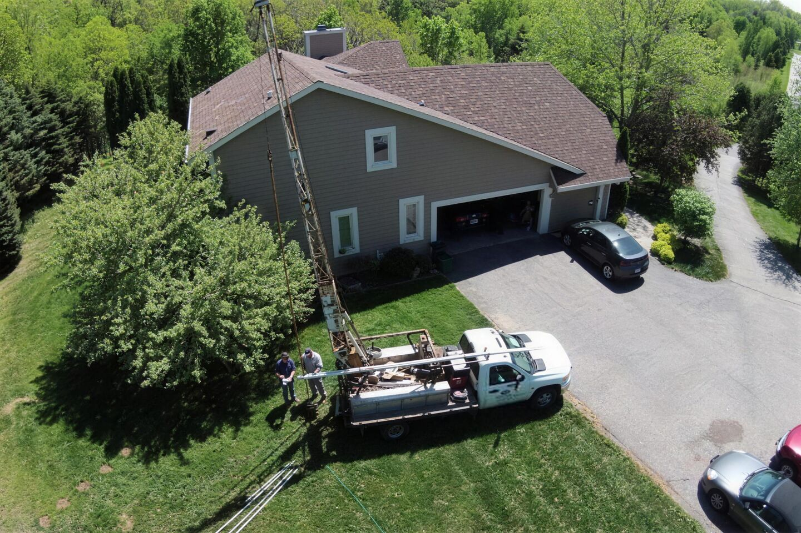
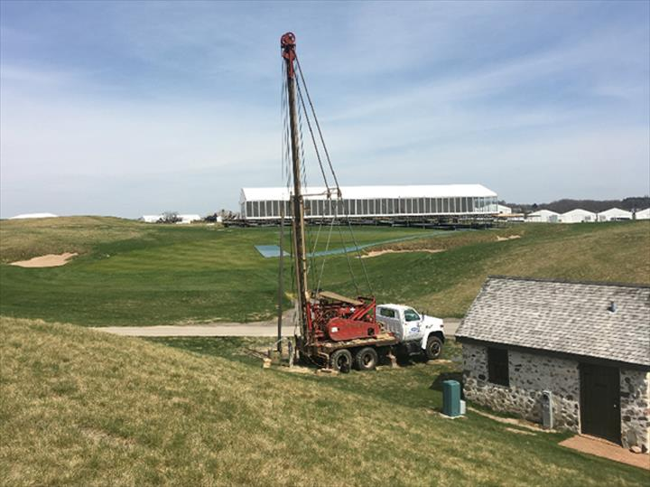
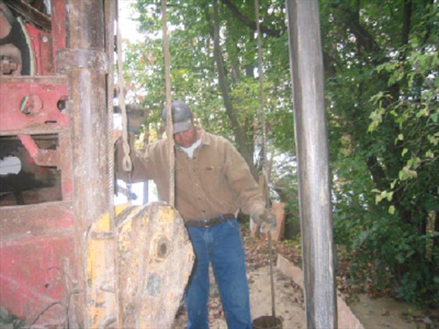

Oconomowoc · Southeastern Wisconsin · Since 1973
No water?Call D&D, day or night.
Water well drilling, new construction and replacement wells, well repairs, pump installation and maintenance, and well abandonment, for homes, farms and businesses. 24 hour emergency service.

Drilling a residential well. Photo from danddwellandpumpsllc.com.
- Since 1973Serving Oconomowoc and surrounding areas
- 24 hourEmergency service, every day
- WI DNR Lic# 7181Certification
- Fully insuredHomes, farms and businesses
- 4.6 ★ on GoogleRead the reviews
Is it your well or pump?
What's your water doing?
Pick the closest match. Low pressure, sputtering, strange noises or no water at all are common signs a well pump needs attention. If your water quits at night, call anyway.
Call now · 24 hour emergency service
Water stopped? Don't wait for morning.
A complete loss of water is the clearest sign of well pump trouble. D&D offers 24 hour emergency service for well repairs and pump installation, so call (262) 567-0803 whenever it happens.
Call (262) 567-0803D&D also handles water well drilling, new construction and replacement wells, well pumps and tanks, and well abandonment. D&D recommends an inspection of your well and pump system at least once a year.
On the job
Our rig, on site.
From site evaluation to completion: water well drilling for residential, agricultural and commercial needs.


Where we work
Southeastern Wisconsin, from our shop on County Road F in Oconomowoc.
- Waukesha
- Dodge
- Washington
- Jefferson
- Ozaukee
- Racine
- Milwaukee
- Kenosha
- Walworth
Counties, Wisconsin.
What customers say
They pick up. They show up.
4.6on Google · Read the reviews“I called Darren yesterday when my water abruptly stopped running late in the afternoon. He had a haircut scheduled that evening but said he could come after around 8pm. Showed up on time and had my water running again in 20 minutes. Just needed a new control panel on the well pump. Can not say enough about how grateful I am the he made a late evening call. Could have easily told me to wait until morning. Would not hesitate again to use him if necessary, and will recommend him to anyone in need of well services. Thanks so much D&D!!!!”
Megan Duncan · 8/9/2023
“We woke up on a Saturday morning to a well system that had stopped functioning. Darren was out and had it up and running again that same morning.”
Dan · 5/14/2022
“Great service. Call at 5am guys was fixing my well pump by 9am.Highly recommend d and d.great guy”
Chris Knapp · 9/16/2022
Testimonials as published on danddwellandpumpsllc.com.
A first look at your new site.
Since 1973, the 24 hour number under every thumb, and your own customers' words, on a site that looks like D&D's.